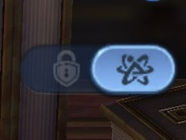
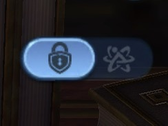

Protect Your Immortal Fragments
Have you collected hundreds or even thousands of Immortal fragments you no longer need? The Alchemy Lab has a small toggle that makes fragment management much easier. It is useful both for dismantling unwanted fragments and protecting the ones you want to save.
Find the Toggle
Open Alchemy Lab → Immortal Dismantle and look in the upper-right corner. The two positions of the toggle are shown below.

Lock Mode
Select the padlock side when managing which fragments should stay protected.

Dismantle Mode
Switch to the other side when managing fragments available for dismantling.
Use the toggle to switch between the two modes, then check the lock icons on individual fragment portraits. The toggle itself does not mean that every fragment has been permanently unlocked.
Why This Matters
For developed accounts: If you have large stacks of surplus Epic (orange) Immortal fragments, this control can help you access fragments that would otherwise appear protected when you want to refine them.
For newer and free-to-play accounts: You can also protect fragments you are saving for future Immortal upgrades instead of risking an accidental dismantle.
How to Use It
- Open Alchemy Lab and choose Immortal Dismantle.
- Use the small toggle at the upper-right to access the relevant lock or dismantle controls.
- Check the padlock on each fragment and protect anything you intend to keep.
- Select only surplus fragments for refinement.
- Review your selection and the expected return before pressing Refine.